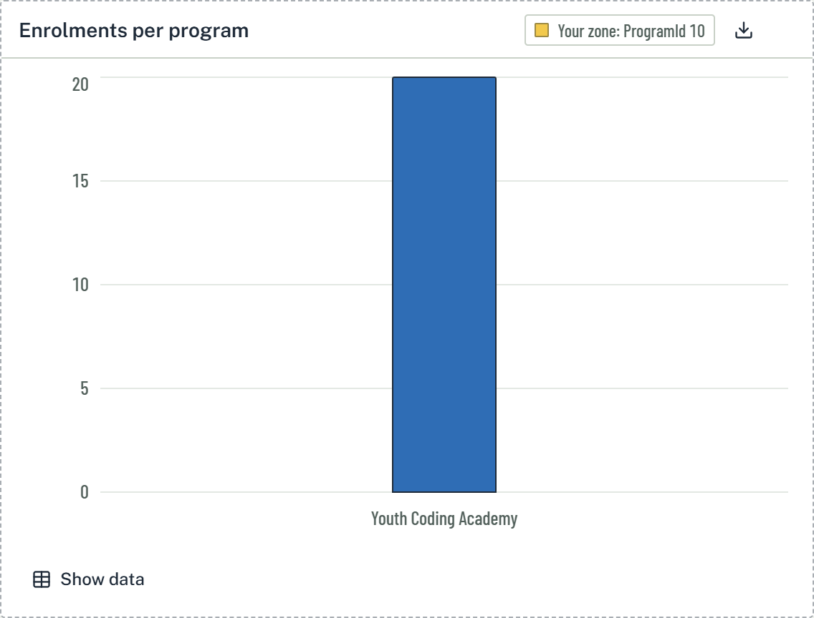
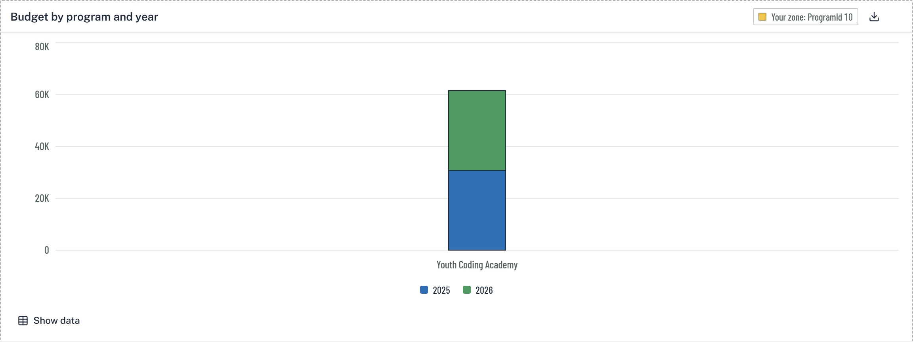

Every app
wants reports.
Give them all
one hub.
Self-service reporting your apps hand their users into. Everyone sees only their own rows.


QueryBuilder HubSwipe to see how 1 / 12
Self-service reporting your apps hand their users into. Everyone sees only their own rows.

Mary runs program 10. Raj runs program 20. They open the very same chart from the very same app.
Alex, an Admin for every program, opens it too and sees all five. Nobody had to build three reports.
Lee is a Viewer for program 10. Lee sees only the dashboards published to the app, each chart drawn with Lee's scope, and never the SQL behind it.

